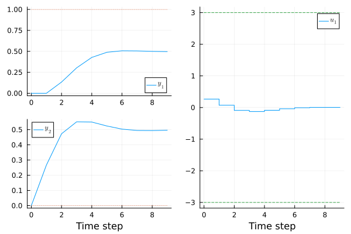
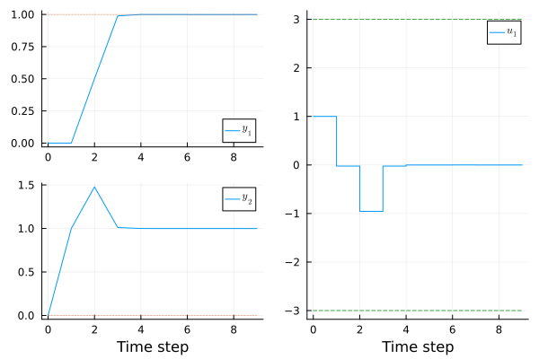

Simple Example
A simplified form of the MPC problem that LinearMPC.jl solves is
\[\begin{aligned} &\underset{u_0,\dots,u_{N-1}}{\text{minimize}}&& \frac{1}{2}\sum_{k=0}^{N-1} {\left((Cx_{k}-r)^T Q (C x_{k}-r) + u_{k}^T R u_{k} + \Delta u_{k}^T R_r \Delta u_k\right)}\\ &\text{subject to} && x_{k+1} = F x_k + G u_k, \quad k=0,\dots, N-1\\ &&& x_0 = \hat{x} \\ &&& \underline{b} \leq A_x x_k + A_u u_k \leq \overline{b}, \quad k=0, \dots, N-1 \end{aligned}\]
Consider now the specific case when we have a given dynamical system $x_{k+1} = F x_k + G u_k$ with
\[F \triangleq \begin{bmatrix} 1 & 0.5 \\ 0 & 1 \end{bmatrix},\quad G \triangleq \begin{bmatrix} 0 \\ 1 \end{bmatrix}.\]
The quantities that we want to control are $y_1 = x_1$, and $y_2 = x_1+x_2$, which can be put on the form $y = C x$ with
\[C \triangleq \begin{bmatrix} 1 & 0 \\ 1 & 1 \end{bmatrix},\]
and the weights of the objective are
\[Q \triangleq \begin{bmatrix} 1 & 0 \\ 0 & 1 \end{bmatrix},\quad R = 0, \quad Rr= 1.\]
Moreover, we assume that we have the input constraint $-3 \leq u \leq 3$, and the output constraints $0 \leq y_1 \leq 1$, and $0 \leq y_2 \leq 2$. Finally, we have the constraint $-1 \leq 2 x_1 - x_2 \leq 2$.
We can create an MPC controller for the corresponding problem with the following code:
using LinearMPC
# dynamics
F = [1 0.5; 0 1]
G = [0;1]
# create mpc struct
mpc = LinearMPC.MPC(F,G; C=[1 0; 1 1])
# objective
set_objective!(mpc, Q=[1,1], R=0, Rr = [1])
# add constraints
set_bounds!(mpc,umin=[-3],umax=[3], ymin= [0, 0],ymax = [1,2])
add_constraint!(mpc,Ax = [2 -1], lb = [-1], ub = [2])
# the prediction/control horizons
set_horizon!(mpc,10)where the last command set_horizon!(mpc,10) sets the prediction horizon of the controller to 10 time steps.
That is it! Let's try our MPC controller.
Testing the MPC controller in simulation
The function compute_control(mpc,x;r) uses the MPC controller mpc to compute an optimal control action given the state x and reference value r. For example,
u = compute_control(mpc,[0.5,1];r=[0,0])gives that the optimal control action at x=[0.5,1] with r=[0,0] is u=-1.
Still, it is hard to draw any conclusion about wheter the controller is doing what we desire based on solving just one problem. To give a better feel of the performance of the MPC, we can create a Simulation for it. The following code simulates the closed-loop system, starting at x0=[0,0], with a reference value r=[1,0], for N=10 time steps:
# simulate the system
sim = LinearMPC.Simulation(mpc;x0=[0,0],r=[1,0],N=10)
To visualize the result we can use the plotting package Plots:
using Plots
plot(sim)

We can see that both of the output are not following the references very well. This is due to the desired value r=[1,0] not satisfying the constraints, which makes it impossible to reach it. If we, however, mainly want $y_1$ to reach its reference, we can increase the weight of $y_1$ from 1 to 1000:
set_objective!(mpc, Q=[1000, 1], Rr = [1])
sim = LinearMPC.Simulation(mpc;x0=[0,0],r=[1,0],N=10)
plot(sim)
This gives the desired effect, since now $y_1$ is able to follow its reference. The output $y_2$ still don't reach its reference value of 0 due to the constraint $-1\leq 2 x_1 - x_2 \leq 2$. With the controller doing what we want, it is ready to be deployed in practice!
Code generation
Most real-time controllers run on embedded hardware, which often require the controller to be implemented in a low-level programmign language like C. However, implementing an MPC controller in C from scratch is a very time consuming endeveaur. To simplify the process, LinearMPC.jl can generate C-code for MPC controllers that have been designed and tested in Julia, which enables the MPC controller to easibly be applied on embedded systems. To generate such C code in a directory code_dir, we can run the following code
LinearMPC.codegen(mpc; dir="code_dir", fname="test_mpc")where fname determines some of the naming of the generated code.
The main function of interest (located in {fname}.h) is mpc_compute_control(control, state, reference, disturbance). This function computes the optimal control given the current state, reference, and measured disturbances disturbance, which are all floating-point arrays. The optimal control is stored in the floating-point array control.
If there is a penalty on the change in of control actions $\Delta u$, the function mpc_compute_control uses the value that is in control as the previous control action uprev.
To run a quick test of the generated code, let's test to compute a control for x=[0,0] and r=[1,0]. We do this with the following C-code, which we put in a file called test.c:
#include "test_mpc.h"
#include <stdio.h>
int main(){
// initialize
c_float control[1] = {0};
c_float state[2] = {0,0};
c_float reference[2] = {1,0};
// Get the control at the current state/reference
mpc_compute_control(control,state,reference,NULL);
// print the computed control
printf("the control is: %f\n", control[0]);
}where the #include "test_mpc.h" comes from our selection of fname (and the inclusion of stdio is just necessary for printing in the example code.)
Let's compile the code with GCC by running the following commands in a terminal:
gcc *.c -o test.outIf we run the example with ./test.out we get the following output
the control is: 1.000000which matches the control computed by the controller at the first time step in the second simulation above. Hence, the MPC controller seems to work as expected.
How the values of state,reference, and disturbance in the generated C-code are set depends on the particular application. For example, state might come from a state observer, and reference might come from some motion planner or user interface.